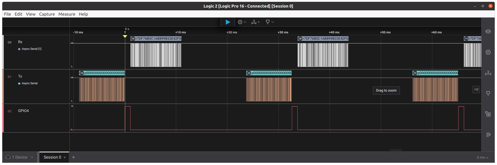
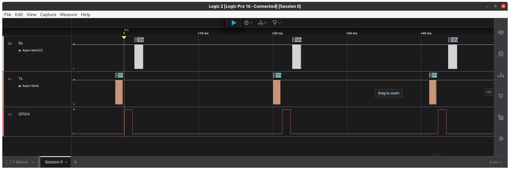
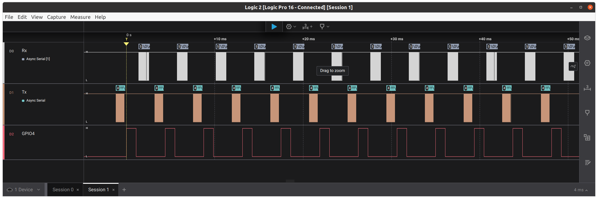
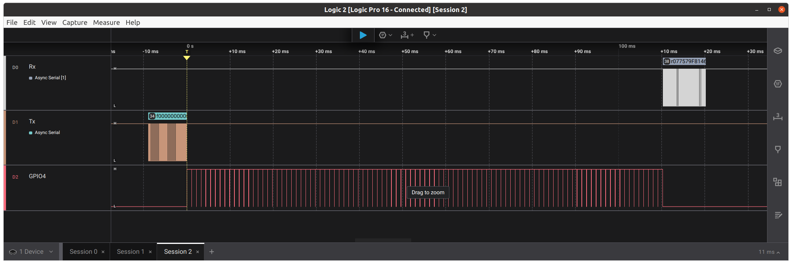

How to speed up captures?#
Supported Capture Hardware:
❌ CW-Nano
❌ CW-Lite
❌ CW-Pro
✅ CW-Husky
Required ChipWhisperer software installation:
✅ any release
%run 'connect.ipynb'
To get fast captures, we must first understand what makes captures slow. Here we assume the target is running our simpleserial-aes firmware, but the principles are applicable to other target firmware.
Running cw.capture_trace() kicks off the following steps:
Send the key and plaintext to the target over UART.
After receiving the plaintext, the target begins its encryption operation.
The target sends the encryption result back over UART.
ChipWhisperer reads the recorded power samples.
Let’s see how fast this can go:
import datetime
starttime = datetime.datetime.now()
from tqdm.notebook import tnrange
for i in tnrange(100):
trace = cw.capture_trace(scope, target, bytearray(16), bytearray(16))
elapsed = datetime.datetime.now() - starttime
print('Elapsed time: %1.3f seconds; %5.1f captures/second' % (elapsed.total_seconds(), 100/elapsed.total_seconds()))
Elapsed time: 3.277 seconds; 30.5 captures/second
Throughput will depend on many factors but should be on the order of 30 encryptions per second.
For most of our notebooks, this is more than fine, since only a few hundred traces are needed.
But some side-channel attacks require orders of magnitude more traces. Trace aquisition speed can then become a limiting factor.
The good news is that with some small tweaks to the target firmware and to the capture code, things can be made to go a lot faster.
With a logic analyzer, you can see how long each of the steps above take:

We can see that the target operation (indicated by the GPIO4 pulse) takes very little time compared to steps 1, 2 and 4.
This was with scope.adc.samples = 5000; decreasing this does not accelerate the capture because of how USB transfers work, however increasing the number of samples past a certain point does slow it down.
One thing we can do is to switch to the version 2 of the SimpleSerial protocol, which runs at 230400 bps instead of 38400 bps:
cw.program_target(scope, cw.programmers.SAM4SProgrammer, 'fw/simpleserial-aes-SSv2.hex')
target.dis()
target = cw.target(scope, cw.targets.SimpleSerial2)
reset_target(scope)
starttime = datetime.datetime.now()
from tqdm.notebook import tnrange
for i in tnrange(100):
trace = cw.capture_trace(scope, target, bytearray(16), bytearray(16))
elapsed = datetime.datetime.now() - starttime
print('Elapsed time: %1.3f seconds; %5.1f captures/second' % (elapsed.total_seconds(), 100/elapsed.total_seconds()))
Elapsed time: 1.984 seconds; 50.4 captures/second
This gives a nice boost; now most of the time is spent reading data back:

We could get a much larger throughput boost if we could avoid reading the captured data after every single target encryption, and instead read the capture samples from multiple target operations into a single burst.
If you’re familiar with segmented capture, then you know where this is going: we can ask Husky to capture X samples each time is is triggered.
A bad way to do this is shown below. The problem here is that Python and the host PC are still in the loop, sending each plaintext one at a time, waiting for the target to complete its encryption before sending the next plaintext.
Not only will this limit the trace acquisition speed, it’s also possible (due to OS delays on the host PC) that the trigger is “missed” (i.e. TIO4 goes high and back low before the while not scope.io.tio_states[3] line).
Don’t do it this way – this is only shown as a stepping stone towards a better solution.
print('***WARNING: this is a bad example, DO NOT BORROW IT!***')
scope.adc.segments = 100
scope.adc.samples = 500
scope.arm()
starttime = datetime.datetime.now()
for i in tnrange(scope.adc.segments):
# make the target encrypt:
target.simpleserial_write('p', bytearray(16))
# wait for TIO4 to go high:
while not scope.io.tio_states[3]:
pass
# wait for TIO4 to go back low:
while scope.io.tio_states[3]:
pass
elapsed = datetime.datetime.now() - starttime
print('Elapsed time: %1.3f seconds; %5.1f captures/second' % (elapsed.total_seconds(), scope.adc.segments/elapsed.total_seconds()))
# clear things up just in case:
scope.sc.arm(False)
scope.errors.clear()
***WARNING: this is a bad example, DO NOT BORROW IT!***
Elapsed time: 0.450 seconds; 222.5 captures/second
Still, this is a nice speedup (when it works!): 
To do this properly, we need to take Python and the host PC out of the loop: we want to send a single message that kicks off all the encryptions.
This is where you may have to get creative; the solution will depend on the target operation and the objective of your attack.
Our stock simpleserial-aes firmware has an additional command 'f' which can be used to kick off up to \(2^{16}-1\) encryptions from a single plaintext: the ciphertext from encryption \(i\) becomes the plaintext for encryption \(i+1\).
Let’s try it out. First, we revert to the SSv1 firmware, because this feature isn’t included in the SSv2 firmware:
cw.program_target(scope, cw.programmers.SAM4SProgrammer, 'fw/simpleserial-trace-SSv1.hex')
target.dis()
target = cw.target(scope, cw.targets.SimpleSerial)
reset_target(scope)
scope.adc.segments = 100
# tell the target how many encryptions to do (scope.adc.segments):
target.simpleserial_write('n', list(int.to_bytes(scope.adc.segments, length=2, byteorder='big')))
target.simpleserial_wait_ack()
scope.arm()
starttime = datetime.datetime.now()
target.simpleserial_write('f', bytearray(16))
#target.flush()
ret = scope.capture(poll_done=True)
wave = scope.get_last_trace()
resp = target.simpleserial_read('r', 16)
elapsed = datetime.datetime.now() - starttime
print('Elapsed time: %1.3f seconds; %5.1f captures/second' % (elapsed.total_seconds(), scope.adc.segments/elapsed.total_seconds()))
Elapsed time: 0.133 seconds; 753.0 captures/second
Now we have some serious speed! 
We can go even faster, with more segments and fewer samples per segment:
scope.adc.samples = 50
scope.adc.segments = 1000
target.simpleserial_write('k', bytearray(16))
target.simpleserial_wait_ack()
target.simpleserial_write('n', list(int.to_bytes(scope.adc.segments, length=2, byteorder='big')))
target.simpleserial_wait_ack()
scope.arm()
starttime = datetime.datetime.now()
target.simpleserial_write('f', bytearray(16))
#target.flush()
ret = scope.capture(poll_done=True)
wave = scope.get_last_trace()
resp = target.simpleserial_read('r', 16)
elapsed = datetime.datetime.now() - starttime
print('Elapsed time: %1.3f seconds; %5.1f captures/second' % (elapsed.total_seconds(), scope.adc.segments/elapsed.total_seconds()))
Elapsed time: 1.125 seconds; 888.9 captures/second
This is an approximately 29x speedup over the basic cw.capture_trace().
If you want to acquire a very large number of traces, you’ll have to figure out how to efficiently store these traces as they come in.
Oh- and we can still verify that the target encryptions were done correctly, by checking the result of the very last encryption, which the target sent back to us:
from Crypto.Cipher import AES
cipher = AES.new(bytearray(16), AES.MODE_ECB)
ct = bytearray(16)
for i in range(scope.adc.segments):
ct = cipher.encrypt(ct)
assert ct == resp
assert not scope.adc.errors, scope.adc.errors